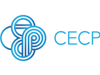
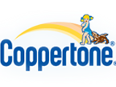
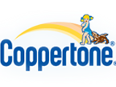

Creative Technology
Hey there! My name is Kai, and I'm an avid reader who enjoys learning about everything. Right now, I'm focusing all my energy on learning to be a better programmer. Below are some of my current and past projects:
{kind=link}
PetFolio, Co-Founder & CTO
Putting pet healthcare records on the blockchain. We won 1st place in the Women+ in Blockchain bus, and 2nd place at StartupBus 2018. With support from HealthTech angel investor Grace Lee, and partner animal rescue organizations, we are now a 5-woman team creating a blockchain company in NYC. Link
{kind=link}
Open Source Plant DNA
DNA barcode and banking project for plant species native to New York, developing in assocation with the NYC Greenbelt Native Plant Center, citizen science at the herbarium in the New York Botanical Gardens, and GenSpace DIY community bio-lab. Creating API to build products and apps that incorporate plant genomic data.
{kind=link}
Project Label, Co-Founder
Combining multiple metrics for corporate social responsibility and environmental sustainability into one index that can be scanned on a mobile phone using UPC barcode, to compare the virtues of products and companies. Our users also shared news about corporate social responsibility, and contributed to our crowd-sourced metrics. Link
{kind=link}
Pokemon Grow: Fitbit App
Some people say it takes 10,000 hours to master a skill. This Fitbit & web app is a pomodoro (time-keeping) program that tracks the number of hours users spend doing various tasks. Your "pet creature" grows with more hours invested in practicing the particular discipline. Created for kids to encourage studying various subjects. Link
Community Organizing
Every relationship brings new wisdom. Grateful for each moment with the people who have taught me so much. Committed to serve, and only hope I can live up to what's been generously shared with me.
{kind=link}
HackBridge: Homeless & Marginalized Youth Learn to Code
Founded a program to teach coding and design skills to marginalized youth in Toronto, at Sketch, where I served as a Community Artist. Recruited local tech companies to support in offering youth opportunities. Check out our graduates presenting their projects at Toronto Civic Tech.
{kind=link}
Streetwise & Safe: LGBTQ Youth of Color in the Prison System
Facilitated media-making workshops with street-based youth who have had encounters with police and prisons, to create video and web multimedia materials for peers, to better understand their legal rights and the juvenile court system. Developed skits and presentation materials for local schools. Link
{kind=link}
Weave-a-Dream: Fairer Trade for Young Indigenous Women in Guatemala
After working for a year as a Jewelry Production Coordinator at Mercado Global, a fair trade organization in Guatemala, my colleague and I created a fashion line sold in NYC boutiques to employ indigenous Mayan women and help build a school. I organized Columbia University winter break trips to fundraise for scholarships for the women's children. Won Student Leadership Award 2007.
{kind=link}
Chinatown Literacy Project: Intergenerational Language Exchange
Co-founded an English-Chinese language exchange program in Chinatown, with student volunteers, meeting weekly with new immigrants in the New York Chinatown community. Started this program as a high school student in 2004. This program continues to run today. My two younger brothers have both served as volunteers. Link
Clients
 

Non-Linear Life
Web Technology & Design
Nonprofit Work & Teaching/Writing
Chinese Circus Arts
Just for Fun
Circus people have nomadic hearts! Something wild in our souls gives us the courage to take enormous leaps, and work hard to perfect every creative detail. All for that joyous moment of amazement!
{kind=link}
Cirque-IT: Sex Robots Rebel in the Singularity, a Musical
DIY costuming for circus/wearable tech fashion show. I wrote a trip hop electronica musical with original choreography, singing, and light-up costumes -- about the Sex Robot Revolution!

Chinese Unicycle: can you juggle this? Trivia game for pro multi-taskers.
A little game in Javascript. Can you catch bowls at the same time as answering trivia questions, like a real Chinese acrobat on a unicycle? Link
Email Me!
kaizen.agility@gmail.com
(C) 2018 SPIRIT KAIZEN: Just make things better!